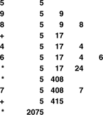
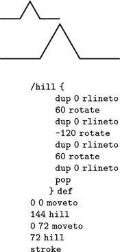
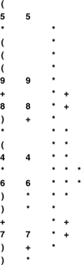

C++ Programming Robert Sedgewick - Princeton University Addison Wesley Professional Algorithms in C++, Parts 1–4: Fundamentals, Data Structure, Sorting, Searching, Third Edition C++ Programming Robert Sedgewick - Princeton University Addison Wesley Professional Algorithms in C++, Parts 1–4: Fundamentals, Data Structure, Sorting, Searching, Third Edition
4.3. Examples of Stack ADT Clients
We shall see a great many applications of stacks in the chapters that follow. As an introductory example, we now consider the use of stacks for evaluating arithmetic expressions. For example, suppose that we need to find the value of a simple arithmetic expression involving multiplication and addition of integers, such as
5 * ( ( ( 9 + 8 ) * ( 4 * 6 ) ) + 7 )
The calculation involves saving intermediate results: For example, if we calculate 9 + 8 first, then we have to save the result 17 while, say, we compute 4 * 6. A pushdown stack is the ideal mechanism for saving intermediate results in such a calculation.
We begin by considering a simpler problem, where the expression that we need to evaluate is in a form where each operator appears after its two arguments, rather than between them. As we shall see, any arithmetic expression can be arranged in this form, which is called postfix, by contrast with infix, the customary way of writing arithmetic expressions. The postfix representation of the expression in the previous paragraph is
The reverse of postfix is called prefix, or Polish notation (because it was invented by the Polish logician Lukasiewicz).
In infix, we need parentheses to distinguish, for example,
5 * ( ( ( 9 + 8 ) * ( 4 * 6 ) ) + 7 )
from
( ( 5 * 9 ) + 8 ) * ( ( 4 * 6 ) + 7 )
but parentheses are unnecessary in postfix (or prefix). To see why, we can consider the following process for converting a postfix expression to an infix expression: We replace all occurrences of two operands followed by an operator by their infix equivalent, with parentheses, to indicate that the result can be considered to be an operand. That is, we replace any occurrence of a b * and a b + by (a * b) and (a + b), respectively. Then, we perform the same transformation on the resulting expression, continuing until all the operators have been processed. For our example, the transformation happens as follows:
5 9 8 + 4 6 * * 7 + *
5 ( 9 + 8 ) ( 4 * 6 ) * 7 + *
5 ( ( 9 + 8 ) * ( 4 * 6 ) ) 7 + *
5 ( ( ( 9 + 8 ) * ( 4 * 6 ) ) + 7 ) *
( 5 * ( ( ( 9 + 8 ) * ( 4 * 6 ) ) + 7 ) )
We can determine the operands associated with any operator in the postfix expression in this way, so no parentheses are necessary.
Alternatively, with the aid of a stack, we can actually perform the operations and evaluate any postfix expression, as illustrated in Figure 4.2. Moving from left to right, we interpret each operand as the command to "push the operand onto the stack," and each operator as the commands to "pop the two operands from the stack, perform the operation, and push the result." Program 4.5 is a C++ implementation of this process. Note that, since the stack ADT is templatized, we can easily use the same code to build a stack of integers in this program and a stack of characters in Program 4.6.
This sequence shows the use of a stack to evaluate the postfix expression 5 9 8 + 4 6 * * 7 + *. Proceeding from left to right through the expression, if we encounter a number, we push it on the stack; and if we encounter an operator, we push the result of applying the operator to the top two numbers on the stack.

Postfix notation and an associated pushdown stack give us a natural way to organize a series of computational procedures. Some calculators and some computing languages explicitly base their method of calculation on postfix and stack operations—every operation pops its arguments from the stack and returns its results to the stack.
Program 4.5. Postfix-expression evaluation|
This pushdown-stack client reads any postfix expression involving multiplication and addition of integers, then evaluates the expression and prints the computed result. It saves intermediate results on a stack of integers, assuming that the interface of Program 4.4 is implemented as a templatized class in the file STACK.cxx.
When we encounter operands, we push them on the stack; when we encounter operators, we pop the top two entries from the stack and push the result of applying the operator to them. The order in which the two pop() operations are performed in the expressions in this code is unspecified in C++, so the code for noncommutative operators such as subtraction or division would be slightly more complicated.
The program implicitly assumes that the integers and operators are delimited by other characters of some kind (blanks, say), but does not check the legality of the input at all. The final if statement and the while loop perform a calculation similar to the C++ atoi function, which converts integers from ASCII strings to integers for calculation. When we encounter a new digit, we multiply the accumulated result by 10 and add the digit.
#include <iostream.h>
#include <string.h>
#include "STACK.cxx"
int main(int argc, char *argv[])
{ char *a = argv[1]; int N = strlen(a);
STACK<int> save(N);
for (int i = 0; i < N; i++)
{
if (a[i] == '+')
save.push(save.pop() + save.pop());
if (a[i] == '*')
save.push(save.pop() * save.pop());
if ((a[i] >= '0') && (a[i] <= [']9[']))
save.push(0);
while ((a[i] >= '0') && (a[i] <= [']9[']))
save.push(10*save.pop() + (a[i++]-'0'));
}
cout << save.pop() << endl;
}
|
One example of such a language is the PostScript language, which is used to print this book. It is a complete programming language where programs are written in postfix and are interpreted with the aid of an internal stack, precisely as in Program 4.5. Although we cannot cover all the aspects of the language here (see reference section), it is sufficiently simple that we can study some actual programs, to appreciate the utility of the postfix notation and the pushdown-stack abstraction. For example, the string
5 9 8 add 4 6 mul mul 7 add mul
is a PostScript program! Programs in PostScript consist of operators (such as add and mul) and operands (such as integers). As we did in Program 4.5 we interpret a program by reading it from left to right: If we encounter an operand, we push it onto the stack; if we encounter an operator, we pop its operands (if any) from the stack and push the result (if any). Thus, the execution of this program is fully described by Figure 4.2: The program leaves the value 2075 on the stack.
PostScript has a number of primitive functions that serve as instructions to an abstract plotting device; we can also define our own functions. These functions are invoked with arguments on the stack in the same way as any other function. For example, the PostScript code
0 0 moveto 144 hill 0 72 moveto 72 hill stroke
corresponds to the sequence of actions "call moveto with arguments 0 and 0, then call hill with argument 144," and so forth. Some operators refer directly to the stack itself. For example the operator dup duplicates the entry at the top of the stack so, for example, the PostScript code
144 dup 0 rlineto 60 rotate dup 0 rlineto
corresponds to the sequence of actions "call rlineto with arguments 144 and 0, then call rotate with argument 60, then call rlineto with arguments 144 and 0," and so forth. The PostScript program in Figure 4.3 defines and uses the function hill. Functions in PostScript are like macros: Thesequence /hill { A } def makes the name hill equivalent to the operator sequence inside the braces. Figure 4.3 is an example of a PostScript program that defines a function and draws a simple diagram.
The diagram at the top was drawn by the PostScript program below it. The program is a postfix expression that uses the built-in functions moveto, rlineto, rotate, stroke and dup; and the user-defined function hill (see text). The graphics commands are instructions to a plotting device: moveto instructs that device to go to the specified position on the page (coordinates are in points, which are 1/72 inch); rlineto instructs it to move to the specified position in coordinates relative to its current position, adding the line it makes to its current path; rotate instructs it to turn left the specified number of degrees; and stroke instructs it to draw the path that it has traced.

In the present context, our interest in PostScript is that this widely used programming language is based on the pushdown-stack abstraction. Indeed, many computers implement basic stack operations in hardware because they naturally implement a function-call mechanism: Save the current environment on entry to a procedure by pushing information onto a stack; restore the environment on exit by using information popped from the stack. As we see in Chapter 5, this connection between pushdown stacks and programs organized as functions that call functions is an essential paradigm of computation.
Returning to our original problem, we can also use a pushdown stack to convert fully parenthesized arithmetic expressions from infix to postfix, as illustrated in Figure 4.4. For this computation, we push the operators onto a stack, and simply pass the operands through to the output. Then, each right parenthesis indicates that both arguments for the last operator have been output, so the operator itself can be popped and output.
This sequence shows the use of a stack to convert the infix expression (5*(((9+8)*(4*6))+7)) to its postfix form 5 9 8 + 4 6 * * 7 + *. We proceed from left to right through the expression: If we encounter a number, we write it to the output; if we encounter a left parenthesis, we ignore it; if we encounter an operator, we push it on the stack; and if we encounter a right parenthesis, we write the operator at the top of the stack to the output.

Program 4.6 is an implementation of this process. Note that arguments appear in the postfix expression in the same order as in the infix expression. It is also amusing to note that the left parentheses are not needed in the infix expression. The left parentheses would be required, however, if we could have operators that take differing numbers of operands (see Exercise 4.14).
In addition to providing two different examples of the use of the pushdown-stack abstraction, the entire algorithm that we have developed in this section for evaluating infix expressions is itself an exercise in abstraction. First, we convert the input to an intermediate representation (postfix). Second, we simulate the operation of an abstract stack-based machine to interpret and evaluate the expression. This same schema is followed by many modern programming-language translators, for efficiency and portability: The problem of compiling a C++ program for a particular computer is broken into two tasks centered around an intermediate representation, so that the problem of translating the program is separated from the problem of executing that program, just as we have done in this section. We shall see a related, but different, intermediate representation in Section 5.7.
Program 4.6. Infix-to-postfix conversion|
This program is another example of a pushdown-stack client. In this case, the stack contains characters. To convert (A+B) to the postfix form AB+, we ignore the left parenthesis, convert A to postfix, save the + on the stack, convert B to postfix, then, on encountering the right parenthesis, pop the stack and output the +.
#include <iostream.h>
#include <string.h>
#include "STACK.cxx"
int main(int argc, char *argv[])
{ char *a = argv[1]; int N = strlen(a);
STACK<char> ops(N);
for (int i = 0; i < N; i++)
{
if (a[i] == ')')
cout << ops.pop() << " ";
if ((a[i] == '+') || (a[i] == '*'))
ops.push(a[i]);
if ((a[i] >= '0') && (a[i] <= '9'))
cout << a[i] << " ";
}
cout << endl;
}
|
This application also illustrates the value of ADTs and C++ templates. Not only do we use two different stacks, but also one of the stacks holds objects of type char (operators), whereas the other holds objects of type int (operands). With the templatized-class ADT defined in Program 4.4, we could even combine both of the clients just considered into one program (see Exercise 4.19). While this solution is very attractive, we should be aware that it might not be the approach of choice, because different implementations may have different performance characteristics, so we might not wish to decide a priori that one implementation will serve both purposes. Indeed, our main focus is on the implementations and their performance, and we turn now to those topics for pushdown stacks.
Exercises |  4.12 Convert to postfix the expression 4.12 Convert to postfix the expression
( 5 * ( ( 9 * 8 ) + ( 7 * ( 4 + 6 ) ) ) ) .
| | 4.13 Give, in the same manner as Figure 4.2, the contents of the stack as the following expression is evaluated by Program 4.5
5 9 * 8 7 4 6 + * 2 1 3 * + * + * .
| | 4.14 Extend Programs 4.5 and 4.6 to include the - (subtract) and / (divide) operations. | | 4.15 Extend your solution to Exercise 4.14 to include the unary operators - (negation) and $ (square root). Also, modify the abstract stack machine in Program 4.5 to use floating point. For example, given the expression
(-(-1) + $((-1) * (-1)-(4 * (-1))))/2
your program should print the value 1.618034. | | 4.16 Write a PostScript program that draws this figure:
| |  4.17 Prove by induction that Program 4.5 correctly evaluates any postfix expression. 4.17 Prove by induction that Program 4.5 correctly evaluates any postfix expression.
| |  4.18 Write a program that converts a postfix expression to infix, using a pushdown stack. 4.18 Write a program that converts a postfix expression to infix, using a pushdown stack.
| | 4.19 Combine Program 4.5 and Program 4.6 into a single module that uses two different stack ADTs: a stack of integers and a stack of operators. | |  4.20 Implement a compiler and interpreter for a programming language where each program consists of a single arithmetic expression preceded by a sequence of assignment statements with arithmetic expressions involving integers and variables named with single lower-case characters. For example, given the input 4.20 Implement a compiler and interpreter for a programming language where each program consists of a single arithmetic expression preceded by a sequence of assignment statements with arithmetic expressions involving integers and variables named with single lower-case characters. For example, given the input
(x = 1)
(y = (x + 1))
(((x + y) * 3) + (4 * x))
your program should print the value 13. |
|